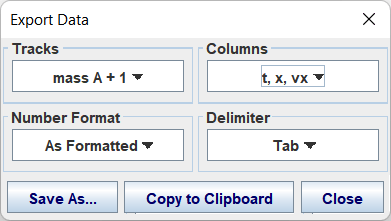

Tracker saves the state of individual tabs (video clip, coordinate system, tracks and views) in xml-based tracker files with the extension "trk". When a saved tracker file is opened, the saved state is reproduced in a new tab.
You can also save a tabset that references several tabs (individual tabs must be saved first). The tabset is a separate tracker (.trk) file that, when opened, loads all the tabs at once.
Step positions saved in tracker files are in image (pixel) coordinates, so they are not suitable for direct analysis. To access the world data associated with a track, use a datatable view or export the data to a delimited text file.
Bring up the open dialog with the Open button or File|Open File menu item, select the desired file, and click Open.


Tracker opens the file in a new tab that displays the file name.

Choose the File|Open URL menu item and enter a known URL in the dialog to open a tracker file directly from the web.


Another option is to open the OSP Digital Library Browser by clicking the Open Library Browser button or choosing the File|Open Library Browser menu item. The library browser enables you to browse and access collections of digital library resources including videos and tracker files. For help using the OSP Digital Library Browser, choose its Help|Library Browser Help menu item.

Save changes to an open tab by clicking the Save button 
 or File|Save Tab "filename" menu item.
or File|Save Tab "filename" menu item.
Save a new tracker file by choosing the File|Save Tab As... menu item. Tracker will automatically assign the file a "trk" extension.

Save a tabset by choosing the File|Save Tabset As... menu item. You will first be prompted to save open tabs that have not previously been saved. All currently open tabs will be included in the tabset tracker file.
Videos, tracks and/or the coordinate system from a tracker file can be imported into an existing tab using the Import|Tracker File menu item from the File menu.

When importing from a tracker file, the available elements are displayed in a dialog that allows the user to select those desired.

A tracker file is easily human-read and edited with any text editor. The xml format conforms to the doctype specification defined in osp10.dtd.
Save the data displayed in a data table by choosing the Export|Data File... item. This will bring up the Export Data dialog as shown.

In the dialog, select the data table and cells to export, the number format desired (full precision or as formatted in the table), and the delimiter used for separating columns. The file is saved in a plain delimited text format readable by spreadsheets, word processors and many other applications.